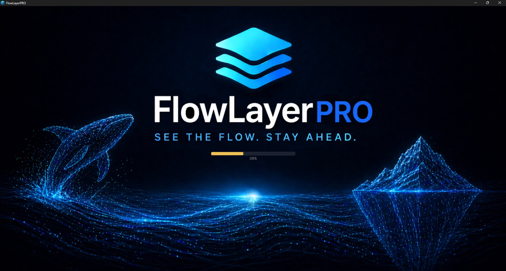
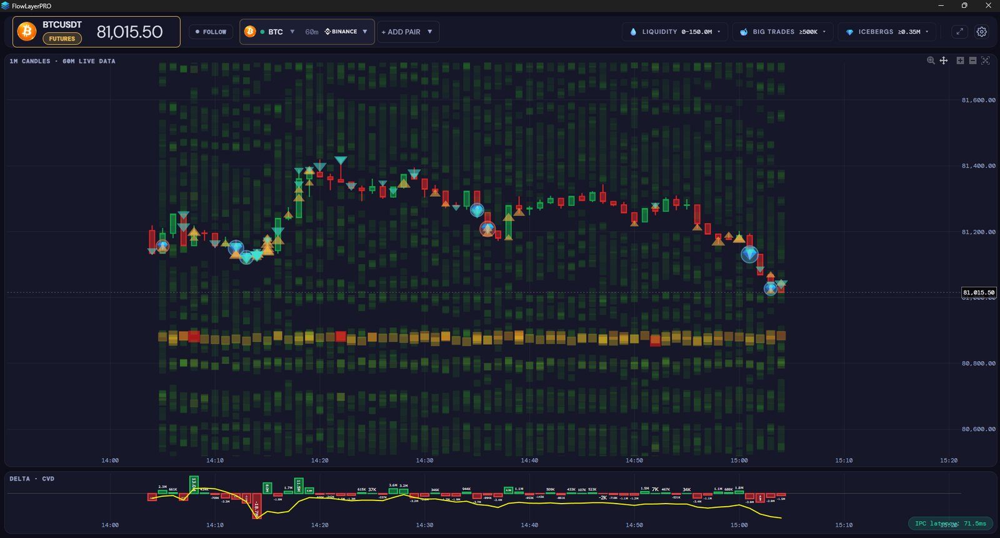
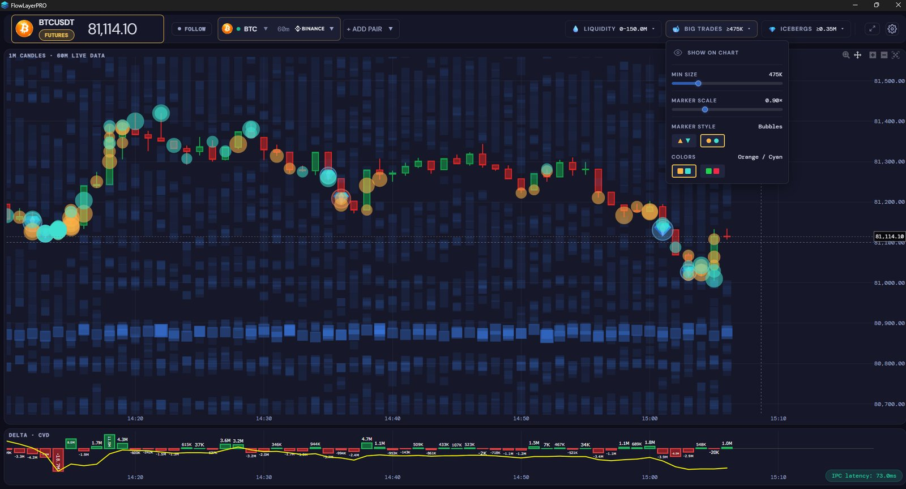
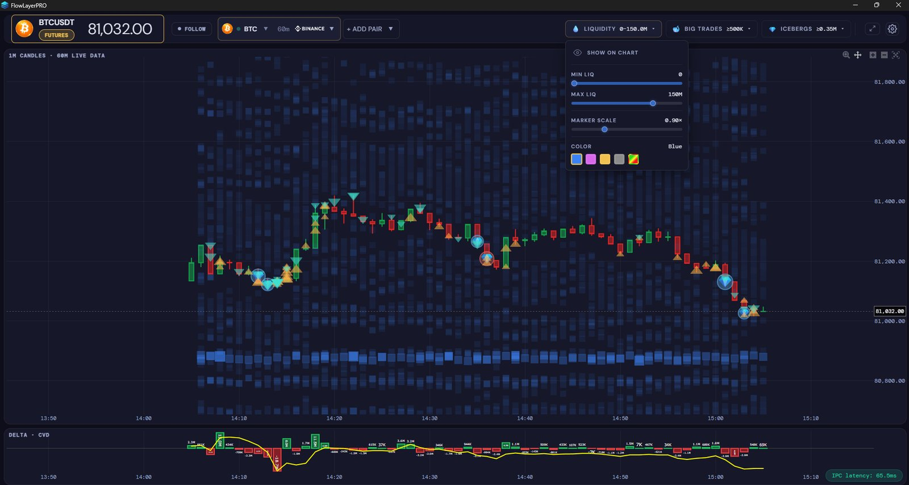
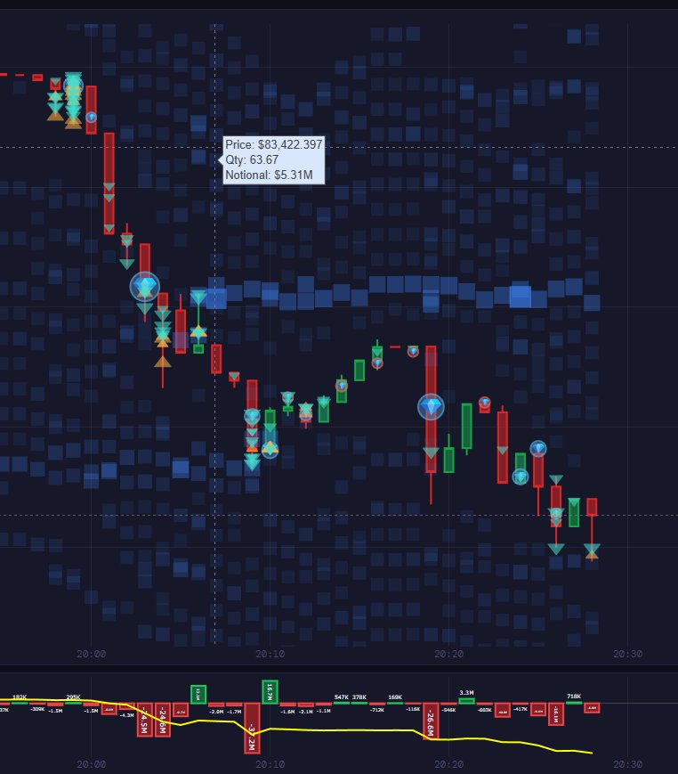
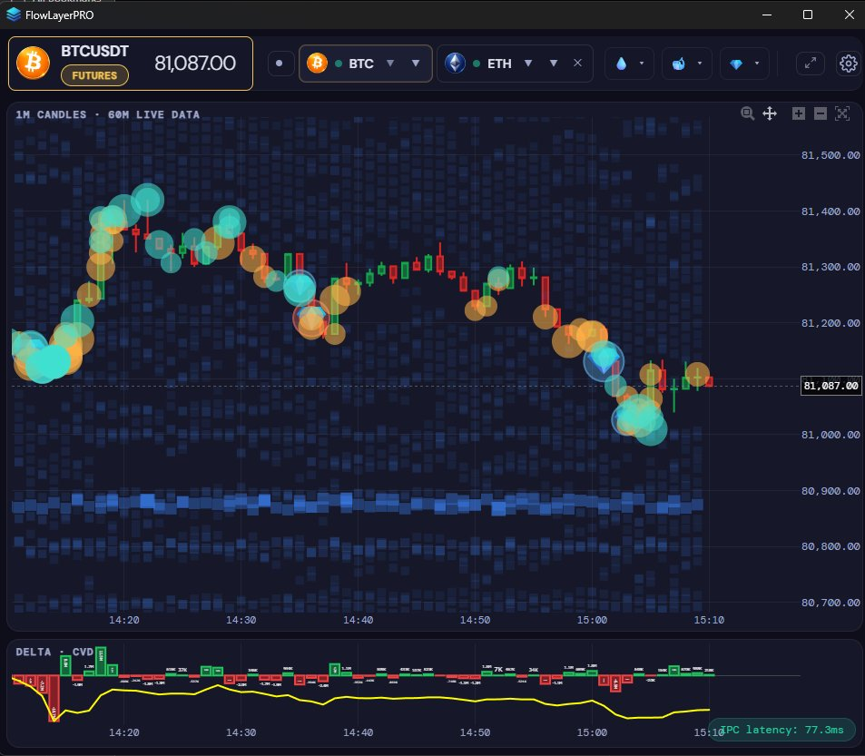
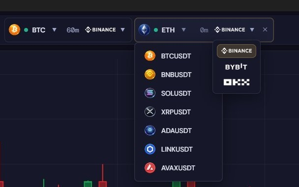
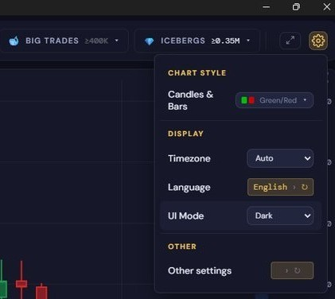

FlowLayerPRO
A Windows desktop app that streams live trades and order-book depth from Binance, Bybit, and OKX and turns them into one readable chart: liquidity walls, large trades, iceberg orders, and buy/sell delta, refreshed every 300 ms. I designed the product, directed its development with an AI coding assistant, and tested every change before accepting it.


At a glance
- Data: live WebSocket streams from 3 exchanges across 8 USDT perpetual markets, up to 2 pairs on screen at once.
- Stack: Python engine (pandas, NumPy, websocket-client, threading), Tauri desktop shell, Plotly.js WebGL charts.
- Status: production Windows build complete; currently in investor demos ahead of a closed beta.
- Code: private, since this is a commercial product. I'm happy to walk through it in an interview.
What the app shows
Order books and large trades carry information that moves price, but in raw form they arrive as a constant stream of WebSocket messages. The app processes them on the user's machine and draws four layers on one chart:
- Liquidity walls: the order book is sampled at regular intervals, and the largest concentrations of resting orders are drawn as a heatmap behind the candles.
- Large trades: the biggest trades of the last 60 minutes, shown as markers sized by notional value, with an adjustable size threshold.
- Iceberg orders: price levels where executed volume exceeds the visible order size while the level keeps refreshing, a sign of a hidden order.
- Delta and CVD: buy volume minus sell volume per minute, plus its running total.






How it works
A Python engine runs as a background process on the user's computer. It connects directly to each exchange, aggregates the data in background threads, and every 300 ms sends a processed snapshot to the desktop shell, which renders it with WebGL. A separate server handles only licensing and payments; it never touches market data.
Building with an AI coding assistant
I supervised Claude as my coding assistant: it wrote the code drafts, and I reviewed, tested, and approved each one, rejecting or correcting it whenever the evidence didn't hold up. I also made the product decisions and the final call on every design choice. Over 40+ documented milestones, I worked under a fixed set of rules:
- Every claim needs log or command evidence. "It should work" is not evidence.
- One change at a time: apply, recompile, test, confirm.
- Test the packaged release build, never only the development build.
- Verification commands must never print secrets, even redacted.
- A second AI model reviews the architecture before major changes.
These rules caught real mistakes. Three examples:
A trial system that couldn't work
The assistant locked in a design that generated a new installation ID on every reinstall, combined with a counter limiting each user to three free trials. I noticed the two couldn't both hold: with a fresh ID each time, every reinstall would get a new trial and the counter would enforce nothing. I proposed storing the ID so it survives reinstalls, and that became the final design.
Iceberg detection silently stopped working
After a refactor, the app stopped saving iceberg detections. The assistant misdiagnosed the cause three times. I kept pointing out that the evidence didn't fit its explanations, which led to the real cause: the packaging tool loaded the engine twice, so the detector was writing to an empty copy of the data. The fix was to pass the data store in explicitly.
History that never reloaded after going offline
The assistant designed a retry loop that triggered only when the candle store was empty. It had even considered and dismissed the risk. My cold-start offline test showed history never reloaded: a single live candle arriving first made the store non-empty, so the retry never ran. The fix was an explicit flag.
Testing and results
- Performance: under two volatile pairs, processing cycles took up to 2.9 s. After redesigning large-trade tracking around a heap, a 4-hour New York session ran with zero slow cycles, and the refresh interval dropped from 500 ms to 300 ms.
- Connection leak: open sockets grew from 3 to 21 when switching pairs and never closed. I found it by counting sockets during testing; the fix was then verified on the packaged build.
- Stress tests: live-market runs of 2.5 h, 4 h, and 4 h 41 min across all three exchanges, plus offline and cold-start tests.
- Code protection: engine modules compiled to native binaries, confirmed with an A/B test to have no measurable performance cost.
Deployment
I deployed and operated a self-hosted licensing and payment server: a hardened Ubuntu VPS running six Docker Compose services, signed licenses verified offline, verified payment webhooks, and nightly encrypted backups with a tested restore. GitHub Actions builds the Windows installer on every release tag.
Timeline
- Sep 2025: first version as a Jupyter notebook engine with a Dash dashboard, growing out of my earlier Binance trading bot.
- Mar 2026: rebuilt as a desktop app.
- Apr 2026: Bybit and OKX added; engine redesign; first three-exchange stress test.
- Jun–Jul 2026: automated build pipeline and production server.
- Aug 2026: fixes from an external architecture review.
- Now: investor demos ahead of a closed beta.
The source code is private because FlowLayerPRO is a commercial product. I'm happy to walk through the architecture, the code, and the review process in an interview.